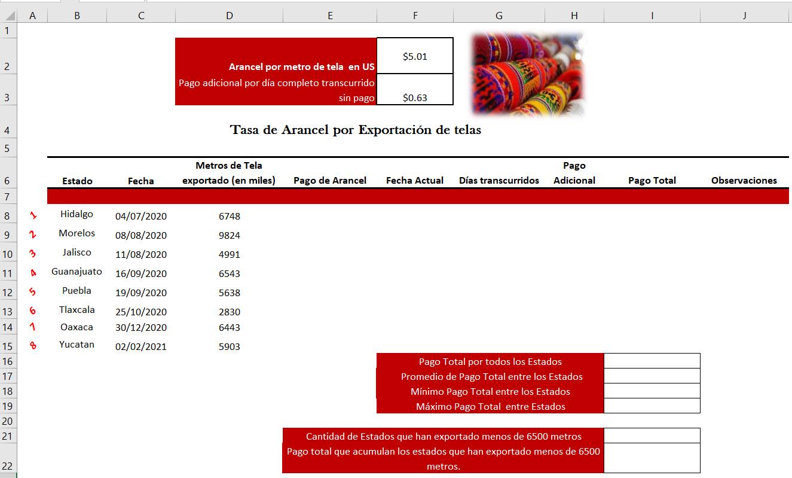

Introducción a Funciones Estadísticas, Matemáticas, Lógicas y Fecha
A. Utilizar las herramientas de la pestaña FÓRMULAS de la Hoja de Cálculo de Excel para dar inicio al trabajo con Funciones Estadísticas, Matemáticas, Lógicas y de tipo Fecha. Actividad a realizarse de forma individual.
DOCUMENTO DE APOYO PARA BAJARLO A TU EQUIPO:
Para el desarrollo de la actividad seguir las siguientes instrucciones.
1.- Abre un libro nuevo de Excel y guárdalo con el nombre EC3-ACT13-APELLIDOS.
2.- Captura la información de títulos y datos según la siguiente tabla modelo. Utiliza cualquier imagen y tipo de fuente que desees, pero considera las otras características de formato de celdas: estilo, ajustes de texto, bordes, relleno de color, formato de número, orientación y alineación, tal como se visualiza.

3.- Considerando una Función, No el operador matemático (*), obtener en celda E8 el pago de Arancel del primer Estado según la cantidad de metros de tela exportados y el costo del Arancel por metro. De forma que:
Pago de Arancel = Metros de Tela exportado x Arancel por metro de tela
Hacer una sola fórmula para el estado de Hidalgo y copiar para los siguientes Estados de la República Mexicana. El resultado a obtener deberán especificarlo en formato moneda y con dos decimales.
4.- Establecer una fórmula en F8, utilizando funciones para obtener la fecha del día. Establecer al resultado el mismo formato que tiene la columna C. Copiar la fórmula para las celdas inferiores que corresponden a los otros Estados de la República.
5.- Considerando Funciones, No operadores matemáticos, hacer una fórmula en G8 que obtenga los días que han transcurrido desde la Fecha en que se llevó a cabo la Exportación. Copiar la fórmula para las celdas inferiores que corresponden a los otros Estados de la República. Establecer el resultado con formato número sin decimales.
6.- Considerando una Función, No el operador matemático (*), obtener en celda H8 el pago adicional del primer Estado según la cantidad de días transcurridos y el costo por día transcurridos sin pagar. De forma que:
Pago adicional = Días transcurridos x Pago adicional por día completo transcurrido sin pago
Hacer una sola fórmula para el estado de Hidalgo y copiar para los siguientes Estados de la República Mexicana. El resultado a obtener deberán especificarlo en formato moneda y con dos decimales.
7.- Considerando una Función, No el operador matemático (+), obtener en I8 el pago Total del primer Estado.
Pago Total = Pago de arancel + Pago adicional
Hacer una sola fórmula para el estado de Hidalgo y copiar para los siguientes Estados de la República Mexicana. El resultado a obtener deberán especificarlo en formato moneda y con dos decimales.
8.- Considerando una Función, hacer una fórmula en J8 donde se especifique un texto según los siguientes criterios:
- Si han pasado más de 150 días desde la exportación se debe generar el rótulo: COBRO URGENTE
- Si no han pasado más de 150 días desde la exportación se debe generar el rótulo: COBRO MENOS URGENTE
NOTA: DEBEN COPIAR LAS FÓRMULA. NO ESTABLECER MANUALMENTE LAS FÓRMULAS EN CADA CELDA.
9.- Considerando Funciones apropiadas para cada una de las especificaciones otorgadas a partir de la fila 16, hacer fórmulas en la columna I.
B. Enviar la evidencia de esta actividad, en formato Excel a través del área establecida para ello en la Plataforma Educativa Virtual Institucional. Para asegurarte que la evidencia contiene todo lo solicitado, verifica la Rúbrica de Evaluación.